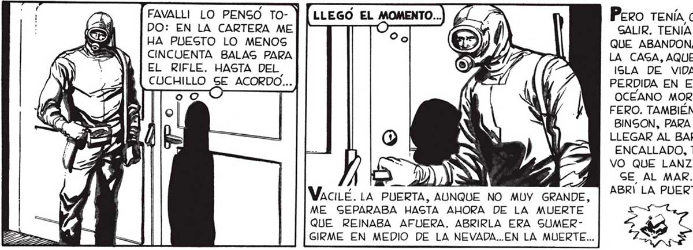

42 FAVALLI LO PENSO TO- | : Pego Tenía qUe DO: EN LA CARTERA ME SALIR. TENÍA HA PUESTO LO MENOS QUE ABANDONAR CINCUENTA BALAS PARA LA CASA, AQUELLA EL RIFLE. HASTA DEL. ISLA DE VIDA CUCHILLO SE ACORDO... PERDIDA EN EL, O OCEANO MORTIFERO. TAMBIÉN ROBINSON, PARA LLEGAR AL BARCO ENCALLADO, TUVO QUE LANZARGE AL MAR... VaciLé. LA PUERTA, AUNQUE NO MUY GRANDE, | 29%! LA PUERTA. ME GEPARABA HASTA AHORA DE LA MUERTE QUE REINABA AFUERA. ABRIRLA ERA SUMERGIRME EN MEDIO DE LA NEVADA...EN LA MUERTE... CERRÉ EN SEGUIDA: FAVALLI eN ME HABÍA RECOMENDADO HA- 2 Pero LO HICE EN FORMA MECÁNICA : TODO 2 MI SER ESTABA COMO ENCOGIDO, AGUARDANDO DE UN INSTANTE A OTRO LA VIOLENTA TINIEBLA QUE DEBÍA SER LA MUERTE... Ny EAN SI ME VA A PASAR ALGO, TENDRÍA RA. , Sa E: n Tuve DELANTE LAG MUERTES DE RAMIREZ Y DE POLSKY. HABIAN CAIDO A LOS POCOS SEGUNDOS DE ESTAR EXPUECSTOG A LA NEVADA...
